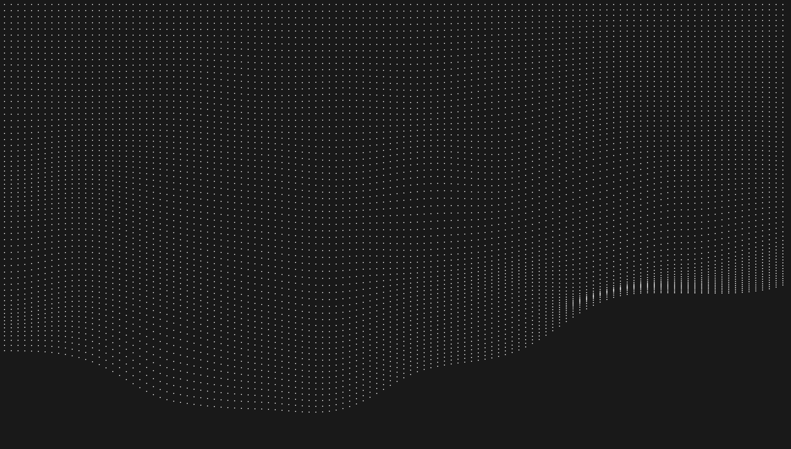
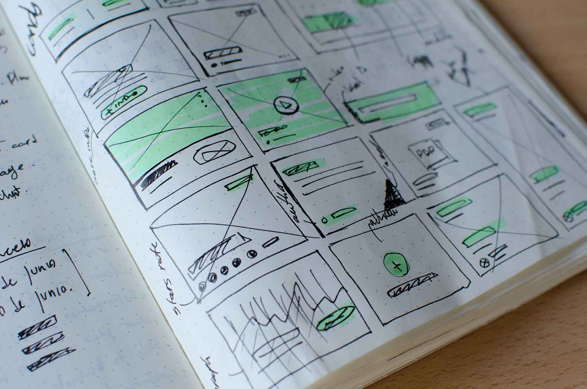

Oliver Meredith
is a digital designer, & front-end developer. He’s currently in the first year of a UI/UX Design degree at Ravensbourne University.

UX Research & Wireframing

is a digital designer, & front-end developer. He’s currently in the first year of a UI/UX Design degree at Ravensbourne University.